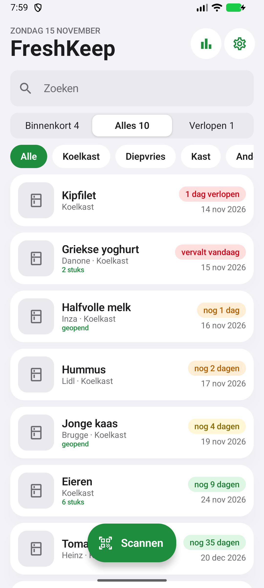
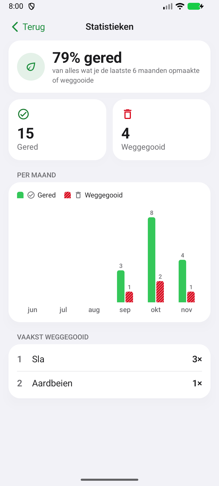
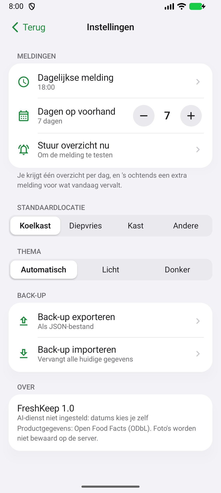

FreshKeep keeps track of what's in your fridge, freezer and pantry — and reminds you before it expires. Scan a barcode, set the date, done.
Android 8.0 or newer · No account · No ads · Interface in Dutch

Point your camera at the barcode. FreshKeep looks up the product name for you.
Pick the expiry date and where it's stored: fridge, freezer or pantry.
One short overview per day of what to eat first — before it's too late.
Simple enough to use every day. Smart enough to actually save food.
Clear colour labels show what needs attention.
Filter by location, search everything, and see what's coming up soon.
Mark items as opened and keep track of when — milk, cheese, sauces.
One overview at a time you choose, plus a morning alert for what expires today.
See how much you saved versus threw away, per month, and what you waste most.
Export or import everything as a file. Light, dark or automatic theme.


FreshKeep isn't in the Play Store (yet). Installing the file directly is safe and takes a minute.
Your products, dates and statistics are stored only on your device. No account needed.
When you scan, just the barcode is sent to Open Food Facts to find the product name.
No ads, no analytics, no trackers. Free and open source.
Yes, completely free and open source (MIT license). No ads, no in-app purchases.
Android phones with Android 8.0 or newer. There is no iPhone version.
Add it by hand — type the name, pick the date and the location.
The app interface is currently in Dutch. This website and the documentation are in English.
FreshKeep can optionally read expiry dates and recognise products from a photo. That needs your own small backend with a Gemini API key (instructions on GitHub). The downloadable app works without it — you simply pick dates yourself.
No. Install the new version over the old one and everything is kept. You can also export a backup in Settings.